Mão e pé frios, pálidos ou roxos com as artérias abertas: Raynaud, acrocianose, livedo, distrofia simpático-reflexa e ergotismo, e o lugar da ferida que separa a úlcera venosa, a arterial e a vasculítica.
Organizada a partir da aula e dos slides, com os termos médicos conferidos e a linguagem ajustada para estudo. A legenda de cores está na página 2.
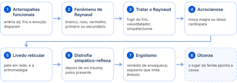
A artéria está sã, sem placa e sem trombo: o problema é o comando do vaso, que se fecha ou se abre demais, quase sempre por exagero do sistema nervoso simpático. Frio e emoção disparam as crises, e a mão ou o pé ficam frios, pálidos ou roxos.
A queixa mais comum é mão e pé frios e roxos, e aqui, ao contrário das vasculites, o próprio paciente procura o vascular por causa disso. A maioria é gente jovem, muito estressada, com ansiedade acima da média. Na maior parte das vezes, mudar o comportamento e o padrão de vida e fazer um pouco mais de exercício já resolve; nos outros casos, investiga-se a doença que está por trás.
No frio ou numa emoção forte, as pequenas artérias dos dedos se fecham num espasmo: o dedo fica branco, depois roxo e depois vermelho. Quase sempre é só um exagero do simpático (primário); quando há uma doença por trás, como a esclerodermia, é secundário e pode ser bem mais grave.
Exposto ao frio, o paciente faz um espasmo intenso das pequenas artérias e arteríolas dos dedos: primeiro vem a palidez; depois do espasmo, uma cianose intensa (o dedo fica roxo); depois da cianose, uma vermelhidão intensa (hiperemia), com ou sem dor. Na fase pálida podem aparecer sensibilidade aumentada, formigamento (parestesia) e dor.
Os gatilhos são o frio e a emoção intensa; o mais comum é lavar a mão na água fria da torneira. Fatores psicológicos pesam muito: estresse favorece as crises. Por trás está uma resposta exagerada do simpático, resumida em três pontos: resposta simpática aumentada, alterações do endotélio (às vezes por mudança dos receptores na parede do vaso) e alterações das plaquetas. Nos casos graves, a crise pode evoluir até a necrose e deixar complicações a longo prazo.
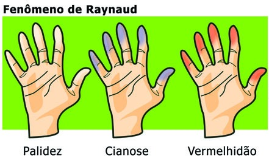
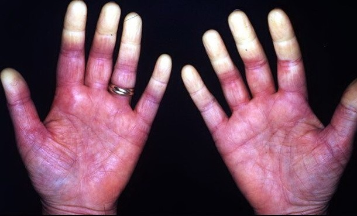
Imagens dos slides da aula.
Raynaud grave pode imitar uma oclusão arterial aguda. O pé fica frio, pálido e depois roxo, e todos pensam em trombo. No exame, as artérias principais estão pérvias (abertas), sem trombo nenhum: é espasmo.
Num dia de inverno, uma moça de Ubiratã fez as unhas e voltou de chinelo, pilotando a moto, para não estragar o esmalte. Em casa, notou o pé pálido, cobriu e foi dormir. De madrugada, acordou com o pé queimando, muito frio e muito pálido; bolsa de água quente não adiantou. De manhã, o médico pensou em oclusão arterial e a mandou para Cascavel, onde chegou com o pé todo cianótico. As artérias principais estavam pérvias. À noite veio a vermelhidão, e os dedos se encheram de bolhas: um ciclo de quase 24 horas de isquemia.
Um tipo de microscópio examina o leito da unha (leito ungueal). No normal, os capilares aparecem finos e regulares. No Raynaud secundário, a imagem é estranha: vasos dilatados, como se uma reação inflamatória importante estivesse acontecendo ali.
Descrita em 1862 por Maurice Raynaud como “asfixia local e gangrena simétrica das extremidades”. Pesam a hereditariedade, o frio e as emoções, a idade abaixo de 30 anos e o sexo feminino.
O diagnóstico é clínico. No primário, nenhum exame de laboratório confirma; no secundário, entram as provas de atividade inflamatória, os exames da doença do tecido conjuntivo e a capilaroscopia. Podem ajudar o ultrassom dúplex (duplex scan) e a angiografia digital. O diagnóstico diferencial inclui colagenoses, acrocianose, aterosclerose obliterante e arterites.
Primeiro, fugir do frio. Se não bastar, um remédio que abre o vaso, que costuma dar dor de cabeça. Para quem não melhora com nada, uma cirurgia desliga o nervo simpático que fecha as artérias da mão.
“Se a pessoa tem oportunidade, muda de Cascavel, vai morar na Bahia. Vai acabar o problema. Pode dar uma recomendação médica: indicar um ambiente mais propício para a pessoa viver.”
A maioria dos pacientes com Raynaud é mulher jovem. Nela, o vasodilatador dá como queixa mais importante a cefaleia: uma dor de cabeça muito intensa, como a pior enxaqueca que ela já teve. Menos comum, mas presente, vem a hipotensão postural: a pessoa não consegue ficar em pé e assiste aula quase desmaiando. Vale para todos os vasodilatadores.
O vasodilatador usado no Raynaud.
Toxina botulínica (Botox) na palma da mão, como se faz na hiperidrose, pode dar algum resultado temporário, mas é muito sofrido. “Eu acho que já é melhor fazer uma simpatectomia do que tomar um monte de agulhada na mão. Eu evitaria.”
Se o problema vem do simpático, cortar a conexão com ele melhora as crises. No tórax, a cirurgia é feita por vídeo: um furo pequeno, a câmera entra e identifica a cadeia simpática ao lado da coluna (paravertebral). Localiza-se o gânglio estrelado, no nível de T1 (primeiro torácico), e abaixo dele se eliminam os gânglios de T2 e T3, para que haja vasodilatação na mão. Os tipos de simpatectomia são cérvico-torácica, lombar e periarterial interdigital.
A mão fica mais quente, mais vermelha e mais seca. É a mesma cirurgia usada na hiperidrose (suor excessivo), outra disfunção do simpático, que pode impedir a pessoa de trabalhar: o suor borra o papel que ela tenta assinar.
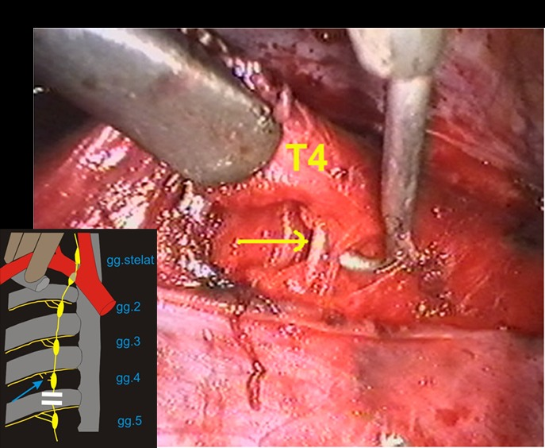
Imagem dos slides da aula.
Mão e pé roxos e frios o tempo todo, sem dor, piores no inverno. Na moça magra, o vaso se fecha demais; no idoso com o coração fraco, o corpo fecha os vasos da ponta para segurar a pressão. Resolve-se mais fácil que o Raynaud.
Acrocianose é a cianose permanente e indolor das extremidades, por disfunção do sistema nervoso autônomo simpático. É uma queixa muito comum. Aparece no inverno, os pulsos estão presentes e a arteriografia é normal. É bem mais fácil de resolver que o fenômeno de Raynaud, e os ansiolíticos também entram no tratamento.
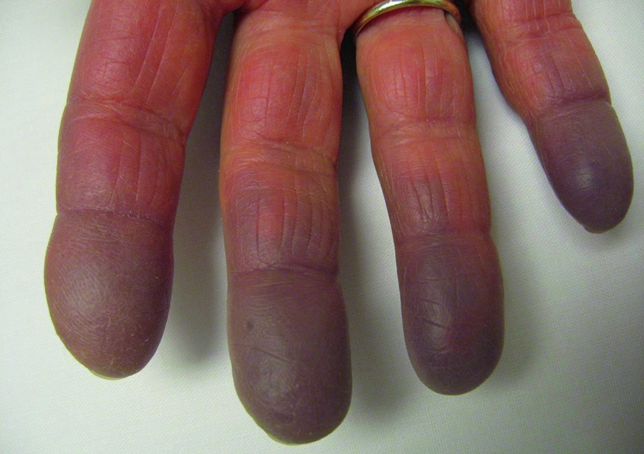
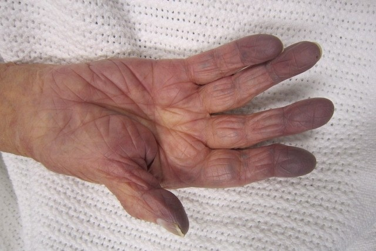
Imagens dos slides da aula.
No livedo, a pele fica numa rede arroxeada: uns pontos do vaso se fecham enquanto outros se abrem. Quase sempre é discreto; quando forte, pode esconder doença grave. Na eritromelalgia, a extremidade fica vermelha e dói com o calor.
A pele fica toda moteada, com aspecto de “pele de defunto”. Há zonas de contração ao lado de zonas de dilatação, e o vaso fica ciclando entre as duas. É uma disfunção mais complexa e mais difícil de entender que a acrocianose. Pode ter relação com doenças graves, principalmente neoplasias, como as do sangue. Nos casos graves, com doença do tecido conjuntivo muito avançada ou neoplasia difícil de controlar, pode evoluir para necrose.
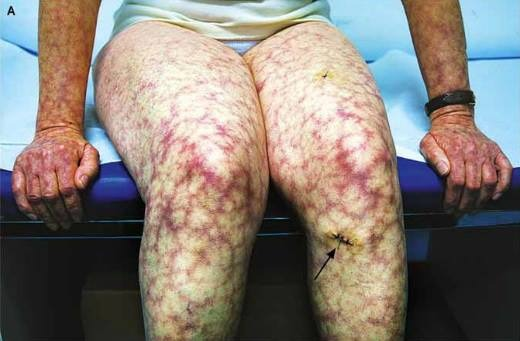
Imagem dos slides da aula.
Crises de dor e vermelhidão (hiperemia) das extremidades que pioram com o calor e melhoram com o frio. Pode ser primária ou secundária a hipertensão arterial, lúpus eritematoso sistêmico, artrite reumatoide e outras doenças.
Depois de um trauma, o simpático entra em curto-circuito: o membro queima, não tolera nem o toque da roupa, fica frio e roxo e vai atrofiando. Parece falta de circulação, mas o pulso está lá. Bloquear ou retirar os gânglios simpáticos resolve.
“Essa aqui vai pegar você que vai fazer ortopedia.”
A distrofia simpático-reflexa, também chamada causalgia, é outra disfunção do simpático. É um curto-circuito: depois de um trauma, como uma fratura, o simpático trabalha demais naquele membro. Ninguém sabe por que algumas pessoas (poucas) desenvolvem; existe sempre um vínculo com um trauma, mesmo depois de uma cirurgia ortopédica bem feita.
A paciente jogava bola com o filho, pisou na bola e quebrou o tornozelo. A fixação com o ortopedista foi normal. Tempos depois, a perna começou a queimar, como se pegasse fogo; ela não tolerava nada encostando, nem calça comprida, e não conseguia apoiar o pé no chão. A perna foi atrofiando e ganhando um aspecto estranho. A pele era fria e parecia isquêmica, mas o pulso pedioso estava presente.
Membro frio e com aspecto de isquemia, mas com pulso pedioso presente, não é oclusão arterial: é hiperatividade simpática. Com um trauma ou uma cirurgia no passado, pense em distrofia simpático-reflexa.
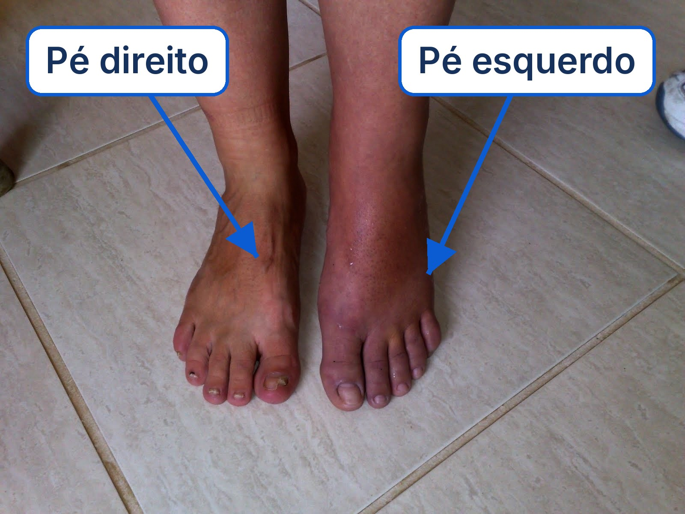
Imagem dos slides da aula.
Dor intensa em queimação, edema, sudorese, distrofia e atrofia das extremidades, em três estágios:
O princípio é bloquear o nervo comprometido. No membro inferior, há dois jeitos; no superior, a simpatectomia é feita no tórax, por vídeo, como no Raynaud.
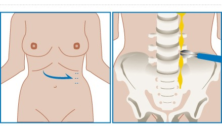
Imagem dos slides da aula.
Alguns remédios de enxaqueca têm derivado do ergot, que fecha os vasos. Em dose alta, uma artéria inteira entra em espasmo e o membro fica como se um coágulo a tivesse entupido, mas não há coágulo. Suspende-se o remédio e relaxa-se o vaso.
Os derivados do ergot estão nos analgésicos contra enxaqueca. O Cefaliv tem di-hidroergotamina, que é vasoconstritora. A Neosaldina, mais simples e muito mais usada, tem dipirona e cafeína, que também contrai o vaso, mas o pior que ela faz é deixar a pessoa muito acordada. Fora dos remédios, há a dietilamida do ácido lisérgico (LSD).
Numa crise forte de enxaqueca, que é desesperadora, a pessoa toma um comprimido, dois, três, até a dor passar. Com derivado do ergot, essa dose tóxica (acima de 10 mg por semana) causa o ergotismo.
A dose tóxica causa um vasoespasmo intenso numa artéria periférica, com o quadro de uma oclusão arterial aguda. No exame, o vaso está completamente espasmado.
Dá a impressão de que a pessoa fez um êmbolo, mas não fez. Nos casos graves, a angiografia é feita achando que é êmbolo e mostra o espasmo.
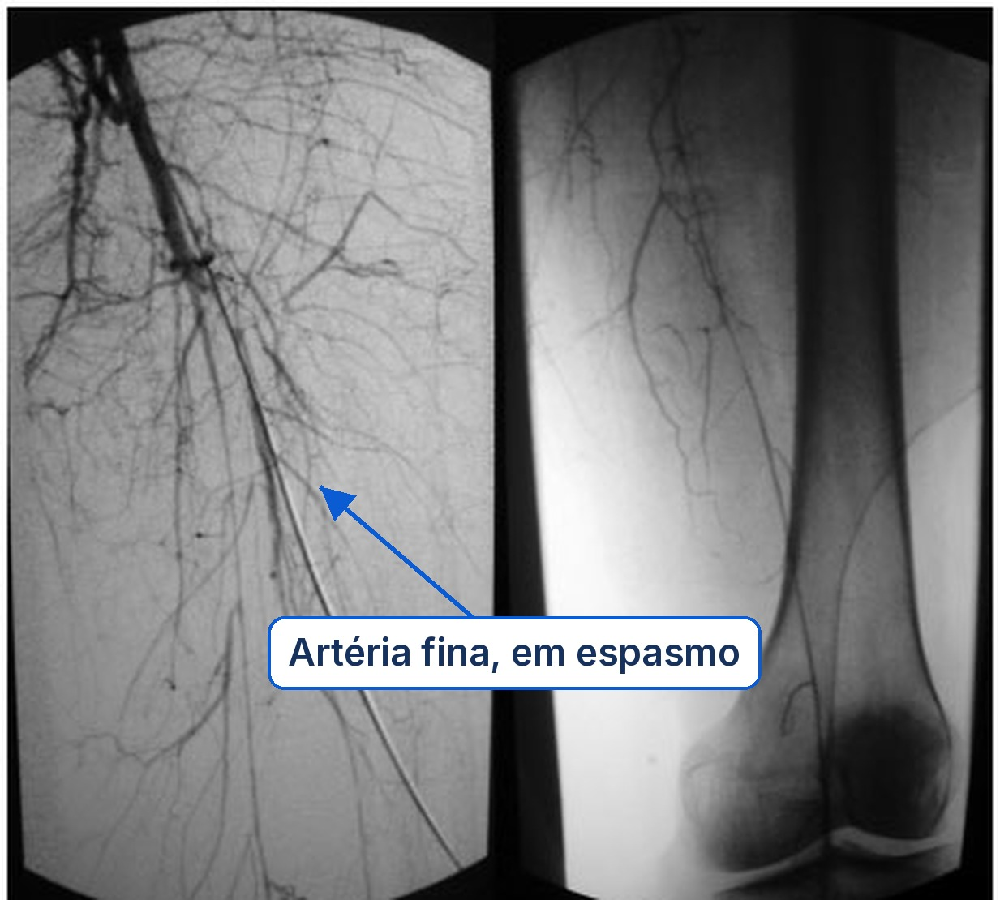
Angiografia do membro inferior. Imagem dos slides da aula.
Suspender a droga. Na angiografia, pelo mesmo cateter, injeta-se um vasodilatador como o nitroprussiato, para relaxar o vaso. Hoje é raro, porque as pessoas tomam mais cuidado com os analgésicos.
Para relaxar o vaso em espasmo.
A maior parte das feridas de perna é venosa e fica por dentro do tornozelo; a arterial fica na ponta do pé. Ferida em lugar estranho, com necrose e muita dor, faz pensar em vasculite e pede o reumatologista.
No consultório vascular, a maior parte dos pacientes chega por causa de feridas. Quem tem vasculite quase nunca chega dizendo isso: em geral vem da reumatologia com o diagnóstico feito. Quando vem direto ao vascular, é pela ferida, e é olhando a ferida que se descobre de onde vem o problema. Fora da ferida, uma pista: mulher jovem hipertensa sem causa definida faz suspeitar de vasculite.
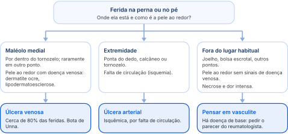
A úlcera venosa fica sempre no maléolo medial, raramente em outro ponto; a arterial, sempre na extremidade (ponta do dedo, calcâneo ou tornozelo). A úlcera vasculítica não segue essa regra: a pele vizinha não tem as marcas da doença venosa, costuma haver necrose (os vasinhos inflamaram e fecharam) e a dor é intensa. Sempre há uma doença de base.
Cerca de 80% das feridas são venosas; o resto se divide entre arteriais e diabéticas, e no pouco que sobra aparece um ou outro caso vasculítico. Úlcera na bolsa escrotal, no joelho ou em outros pontos fora da linha tradicional é o sinal de alerta.
“Quando foge daquela linha tradicional, a gente começa a suspeitar, e aí eu peço sempre o parecer do reumatologista.”
Raynaud grave imita oclusão arterial aguda: pé frio, pálido e depois roxo, mas as artérias estão pérvias, sem trombo.
Primário × secundário: o primário é bilateral, disparado pelo frio, com provas inflamatórias e capilaroscopia normais; o secundário tem doença do tecido conjuntivo por trás, exames alterados e é mais grave.
Vasodilatador na mulher jovem: cefaleia intensa (mais comum) e hipotensão postural. Nifedipina 5 a 10 mg de 12 em 12 horas.
Acrocianose: na jovem, frio, roupa e exercício; no idoso cardiopata, nada de vasodilatador (a pressão cai): digitálico.
Distrofia simpático-reflexa: depois de um trauma, dor em queimação e membro frio com pulso pedioso presente. Bloqueio a cada 6 meses ou simpatectomia lombar (L2 a L4).
Ergotismo: derivado do ergot dos remédios de enxaqueca (Cefaliv, di-hidroergotamina); espasmo que imita êmbolo. Suspender a droga e usar nitroprussiato.
Úlceras: venosa no maléolo medial (cerca de 80%), arterial na extremidade; fora do lugar, com necrose e muita dor, pense em vasculite e chame o reumatologista.